乱七八糟
一亩三分地有人整理过八股
https://www.1point3acres.com/bbs/forum.php?mod=viewthread&tid=998163
https://www.1point3acres.com/bbs/thread-998257-1-1.html
这个是一个答案
https://zhuanlan.zhihu.com/p/640963575
Attention代码
1 | import torch |
在面试中还被问到过一点，出于运算速度的考虑，我们认为“一次大的矩阵乘法的执行速度实际上比多次较小的矩阵乘法更快”，因此你也可以：
1 | self.qkv = nn.Linear(d_model, 3 * d_model) |
八股整理：
Transformer
Other things need to learn:
trace of matrices
newton method
LDA (Linear Discriminant Analysis):
project points to a line, and choose the line that minimize the in-class covariance and maximize inter-class variance

代入$y_i=w^Tx$得
$$
J=\frac{w^TS_bw}{w^TS_ww}
$$
Sw: within class scatter matrix, Sb: between class scatter matrix
w改变幅度，J不变，只需要关心w的方向，可令分母为c，求解分子即可
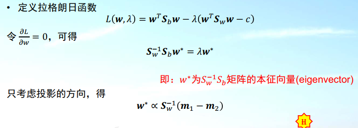选择w0：
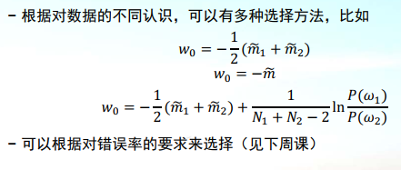Linear Regression:
基本的5个假设
自变量为线性，自变量之间互相独立，误差之间相互独立，误差项的方差是常数，误差服从正态分布
$$
MSE(w) = \frac1N (Xw-y)^T(Xw-y)\
\frac{\part MSE(w)}{\part w} = \frac2N X^T(Xw-y)=0\
X^TXw=X^Ty\
w = (X^TX)^{-1}X^Ty
$$
$X^TX$ not invertible:
PCA select features
SVD or normalization
using SVD:
$$
let X=U\Sigma V^T\
X^TXw = V\Sigma^T\Sigma V^Tw = X^Ty=V\Sigma U^Ty\
w = V\Sigma^{-1}U^Ty
$$
where $V\Sigma^{-1}U^T$ is pseudoinverse of X.
U, V are unitary matrices
using normalization:
$$
Error = \frac1N (Xw-y)^T(Xw-y) + \lambda ||w||^2\
\frac{\part Error}{\part w} = \frac2N X^T(Xw-y)+\lambda w=0\
(X^TX+\lambda I)w=X^Ty\
w = (X^TX+\lambda I)^{-1}X^Ty
$$
Logistic Regression
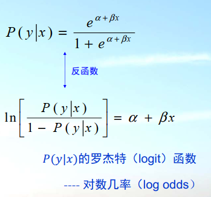 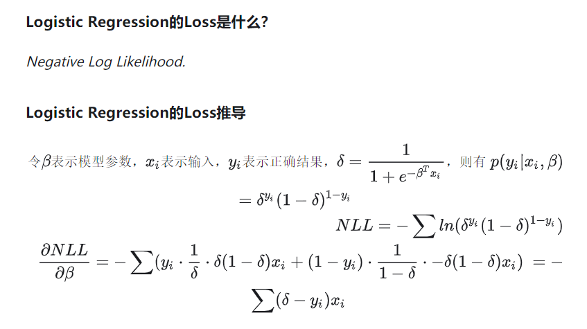在Logistics Regression中，优化cross entropy等于优化NLL。这两个标准是思考的角度不同，一个是信息论（预测的分布跟真实分布尽可能像），一个是概率论。
用MSE误差做Logistic Regression可以吗
用MSE做loss的Logistic Regression是convex problem吗？
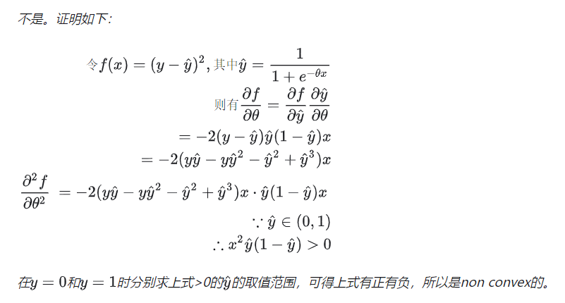
Kmeans
缺点：K值需要人为设定；对初始值敏感；对异常值敏感；只能分到一类；假定了每一类的形状是球形，对于非球形的数据分布效果不好；对于各个维度scale不一样的分布，效果不好（可以标准化normalization）；不能处理离散值。
选择k值：手肘法
核函数
迭代停止条件：
GMM
GMM的EM算法跟Kmeans不一样！！！
E步计算的是每个点属于每一类的概率，不是直接分类

M步按照前面算出的概率对每个点加权，算出新的分布

初始化中心可以用kmeans
GMM和kmeans关系：kmeans是硬分配，GMM是软分配
kmeans相当于认为各类分布均为单位方差的高斯分布
EM算法
一个HMM里的应用
https://zhuanlan.zhihu.com/p/78311644
？
再看看
生成模型有哪些
GMM和其他混合模型
HMM
随机上下文无关文法
朴素贝叶斯分类器
贝叶斯网络
GAN，VAE，GPT，DALLE等
生成模型学习P(x,y)，判别模型学习P(y|x)。虽然也有很多生成模型会用P(x,y)去算P(y|x)，但是毕竟是先求出了P(x,y)。
Ridge和 Lasso，L2和L1
- 从贝叶斯角度看，lasso（L1 正则）等价于参数 w� 的先验概率分布满足拉普拉斯分布，而 ridge（L2 正则）等价于参数 w� 的先验概率分布满足高斯分布。具体参考博客 从贝叶斯角度深入理解正则化 – Zxdon 。
为什么L1稀疏（公式推导）

数据类别不平衡怎么办
假设正例少，负例多
增大正例的采样率，舍弃一些负样本
调整阈值
集成学习如XGBoost
生成一些正例
使用precision@n等评价指标
集成学习 ensemble learning
bagging: 并行

boosting: 串行
各种熵，KL散度
https://www.cnblogs.com/wuliytTaotao/p/9713038.html
自信息：一个事件X=x的自信息 -logP(x)
log2单位是bit，ln nats
香农熵：
KL散度（divergence)或者叫relative entropy：等于一个交叉熵减去一个信息熵
两个分布的差异

交叉熵

kl散度和交叉熵都不具有对称性。

互信息：？
各类准确度
precision: ratio of true positive to all predicted positive 查准率。预测正确的正样本数量，和预测出来的正样本（不管实际是正是负）的数量之比。越大就说明“存伪”错误越小
recall: ratio of true positive to all actual positive 查全率。预测的正样本的数量，和所有正样本（不管预测的是什么）数量之比。越大就说明“去真”错误越小。
F1 score: precision和recall的调和平均 harmonic mean

PR图：Precision-Recall
AUC: area under curve
BEP Break-Even Point 平衡点
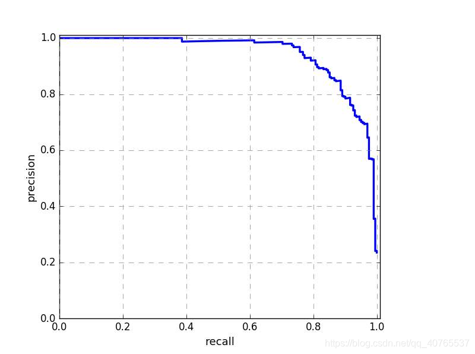ROC图：
真正例率TPR=TP/(TP+FN) 分对了的正例占所有实际上positive的比例
假正例率FPR=FP/(TN+FP) 分错了的反例占所有实际上negative的比例
ROC曲线： TPR-FPR
mAP: mean average precision 目标检测常用的一个衡量标准，所有类别AP（应该就是AUC）的平均值
ranking design的时候用什么metric，推荐的时候用什么等？
排序任务的指标： - MAP：将排序后，所有relevant position处的precision进行平均 - MRR：将Top-1所在rank的倒数作平均 - NDCG：DCG就是每个位置的相关性，除以相应位置的对数（排序越往后，重要性越低）。NDCG就是DCG除以DCG的理论最大值。
about deep learning training
Momentum and Adam
Momentum：移动指数加权平均
RMSProp：root mean square prop 梯度按照元素平方做指数加权移动平均
因为db经常会大于dw很多，所以b更新的幅度比w大很多。因此希望db和dw差不多大，所以就除以这个dw^2或者db^2的指数滑动平均

adam：
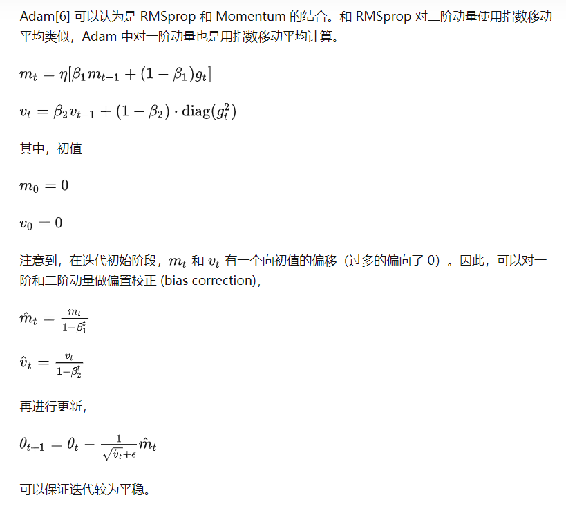梯度爆炸、消失
从深层网络角度来讲，不同的层学习的速度差异很大，表现为网络中靠近输出的层学习的情况很好，靠近输入的层学习的很慢，有时甚至训练了很久，前几层的权值和刚开始随机初始化的值差不多。
如果导数大于1，那么层数增多的时候，最终的求出的梯度更新将以指数形式增加，即发生梯度爆炸，如果此部分小于1，那么随着层数增多，求出的梯度更新信息将会以指数形式衰减，即发生了梯度消失。
解决：regularization，换激活函数比如relu，梯度剪切，residual
ReLU：
x>0时导数为1，不存在爆炸的问题
缺点：负数部分恒为0，会导致一些神经元无法激活（可通过设置小学习率部分解决）
BatchNorm:

Residual
resnet解决的一个是梯度消失和爆炸问题，一个是退化(degradation)(深层网络中含有大量非线性变化，每次变化相当于丢失了特征的一些原始信息，从而导致层数越深退化现象越严重。)
偏差和方差，欠拟合和过拟合
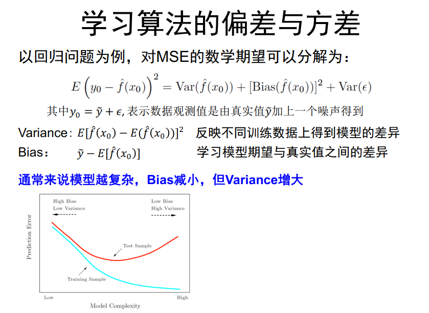 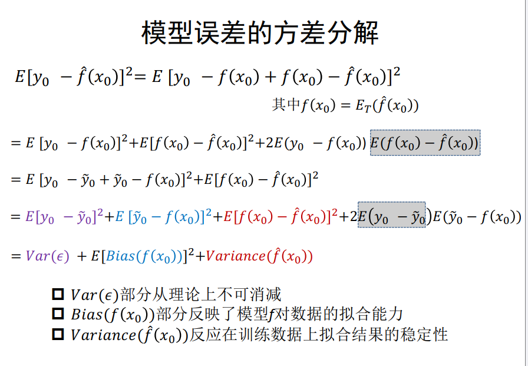解决过拟合
常用方法：增加训练数据，数据增强，正则化，换用较简单的模型，early stop，集成学习，（对于可以预训练的模型）pretrain+finetune，（对于决策树）剪枝pruning
正则化：
L1，L2，（对于神经网络而言）dropout，weight decay
Weight Decay权重衰减
梯度下降时，前一步的参数乘以一个1-lambda

对于SGD，等价于L2 regularization
对于Adam：AdamW

Normalization 归一化 BN，LN
BN:
训练时，均值、方差分别是该批次内数据相应维度的均值和方差。
推理时，均值、方差是基于所有批次的期望计算得到的。其中在推理时所用的均值和方差时通过移动平均计算得到的，可以减少存储每个batch均值方差的内存。
BN效果跟Batch size有关，batch size小的时候效果不好
加速网络训练：BN通过减小内部协变量偏移，使得每一层的输入分布更加稳定，从而加速网络的训练过程。同时，BN还允许使用更大的学习率，加快网络的收敛速度。
提升网络泛化能力：BN能够在一定程度上减轻模型的过拟合风险，从而提升网络的泛化能力。
减小对参数初始化的敏感性：BN的归一化操作使得网络对参数初始化更加鲁棒，不再过于依赖谨慎的参数初始化，从而简化了网络的设计过程。
提高模型的鲁棒性：BN能够增加模型对输入数据的鲁棒性，使得模型对输入数据的小扰动更加稳定。
LN:
单个sample
LN层与BN相比，只考虑单个sample内的统计变量，因此也不用使用BN实现中的running mean, running var.，LN也完全不用考虑输入batch_size的问题。
至于为什么transformer中不使用BN归一化
解释一：CV和NLP数据特性的不同，对于NLP数据，前向和反向传播中，batch统计量及其梯度都不太稳定，一个Batch中每个句子对应位置的分量不一定有意义。
解释二：要能在某个维度做独立同分布假设，才能合理归一化。对于CV来说，batch之间的图像是独立的，可以使用BN，而对于自然语言的token，相互是具有较强的关联性，不是相互独立的。


CNN Pooling
（1）保留主要特征的同时减少参数和计算量，防止过拟合。
（2）invariance(不变性)，这种不变性包括translation(平移)，rotation(旋转)，scale(尺度)。
Pooling 层说到底还是一个特征选择，信息过滤的过程。也就是说我们损失了一部分信息，这是一个和计算性能的一个妥协，随着运算速度的不断提高，我认为这个妥协会越来越小。
Transformer和BERT八股
Transformer：https://zhuanlan.zhihu.com/p/338817680这个感觉讲的最好
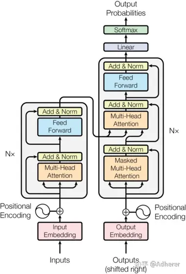位置embedding：
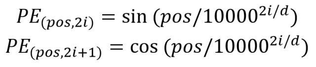- 使 PE 能够适应比训练集里面所有句子更长的句子，假设训练集里面最长的句子是有 20 个单词，突然来了一个长度为 21 的句子，则使用公式计算的方法可以计算出第 21 位的 Embedding。
- 可以让模型容易地计算出相对位置，对于固定长度的间距 k，PE(pos+k) 可以用 PE(pos) 计算得到。因为 Sin(A+B) = Sin(A)Cos(B) + Cos(A)Sin(B), Cos(A+B) = Cos(A)Cos(B) - Sin(A)Sin(B)。
Attention：
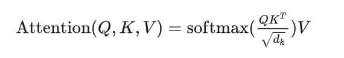 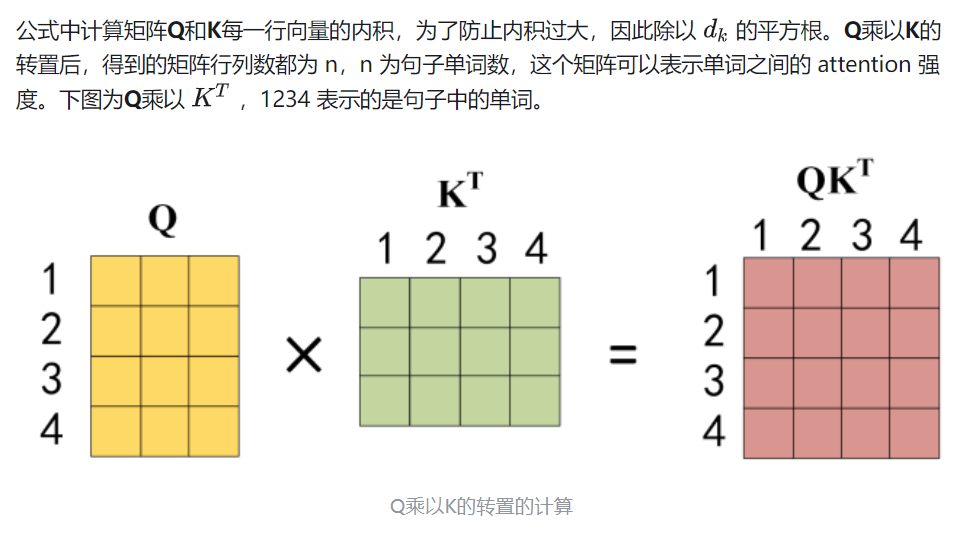softmax是对每一行（对每个Q）的：
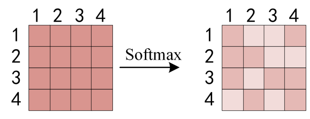最后这个矩阵乘以V得到结果Z
为什么scale是根号d

Encoder:
残差：防止网络退化
（ps resnet的残差想法是来源于lstm控制门）
add和norm：先add后norm

残差作用：
1.解决梯度消失/爆炸问题
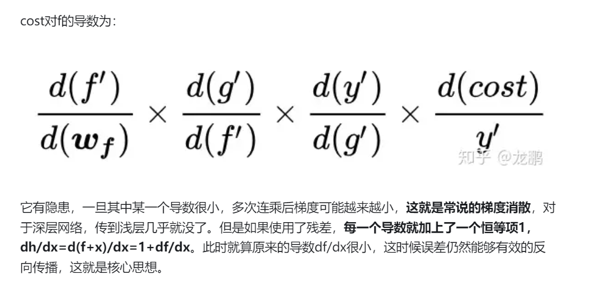2.退化问题

Linear层：把所有头concatenate然后linear
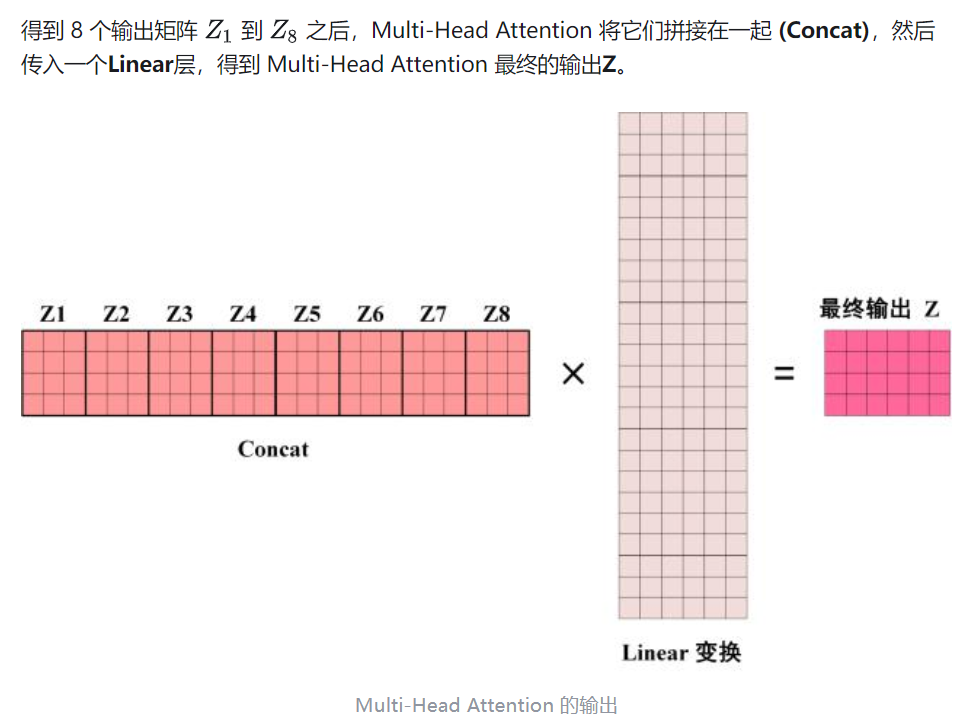Decoder:
需要mask，把当前单词及其后面单词都给mask掉

交互attention：Q来自于decoder自己（masked），K和V来自Encoder输出
为什么Transformer效果好：
1.长距离依赖
2.并行计算
3.相比RNN，网络可以做更深（elmo双层双向lstm训练很慢）
为什么要用QKV，而不是只用QV或者KV：
用QKV的话模型的表达能力要比QV或者KV好
？
为什么要Multi head
将模型分为多个头，形成多个子空间，可以让模型去关注不同方面的信息，最后再将各个方面的信息综合起来。类比CNN中同时使用多个卷积核的作用，有助于网络捕捉到更丰富的特征/信息。
BERT：
Byte Pair Encoding (BPE)
迭代合并字符；随着合并的次数增加，词表大小通常先增加后减小。迭代次数太小，大部分还是字母，没什么意义；迭代次数多，又重新变回了原来那几个词。所以词表大小要取一个中间值。
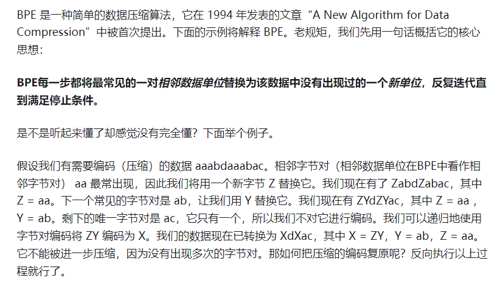https://zhuanlan.zhihu.com/p/424631681
CNN八股
RNN八股
跑个题，快排代码：
1 | def quick_sort(lists,i,j): |
为什么快排比堆排快：cache使用
在读取一个单位的数据(比如1个word)之后，不光单个word会被存入cache，与之内存地址相邻的几个word，都会以一个block为单位存入cache中。另外，cache相比内存小得多，当cache满了之后，会将旧的数据剔除，将新的数据覆盖上去。
在进行堆排序的过程中，由于我们要比较一个数组前一半和后一半的数字的大小，而当数组比较长的时候，这前一半和后一半的数据相隔比较远，这就导致了经常在cache里面找不到要读取的数据，需要从内存中读出来，而当cache满了之后，以前读取的数据又要被剔除。
链接：https://www.zhihu.com/question/23873747/answer/327295185